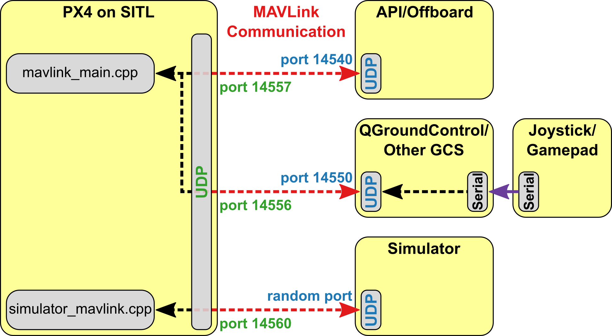

MAVROS包支持运行ROS的计算机、支持Mavlink的自驾仪、支持Mavlink的地面控制站之间使用Mavlink协议进行通信，如图1所示。

为构建px4软件在环仿真环境，下面介绍在协同计算机上安装Ubuntu16.04、ROS和MAVROS的步骤。
安装ubuntu 16.04
安装ubuntu 16.04 LTS桌面板的教程请参考链接Ubuntu 16.04 安装基础入门教程（图文）。
安装ROS
ROS简介
ROS（机器人操作系统，Robot Operating System），是专为机器人软件开发所设计出来的一套电脑操作系统架构。它是一个开源的元级操作系统（后操作系统），提供类似于操作系统的服务，包括硬件抽象描述、底层驱动程序管理、共用功能的执行、程序间消息传递、程序发行包管理，它也提供一些工具和库用于获取、建立、编写和执行多机融合的程序。
ROS的首要设计目标是在机器人研发领域提高代码复用率。ROS是一种分布式处理框架（又名Nodes）。这使可执行文件能被单独设计，并且在运行时松散耦合。这些过程可以封装到数据包（Packages）和堆栈（Stacks）中，以便于共享和分发。ROS还支持代码库的联合系统。使得协作亦能被分发。这种从文件系统级别到社区一级的设计让独立地决定发展和实施工作成为可能。上述所有功能都能由ROS的基础工具实现。
ROS有三个层次的概念：分别为Filesystem level，Computation graph level， 以及Communication level。 以下内容具体的总结了这些层次及概念。除了这三个层次的概念， ROS也定义了两种名称— Package资源名称和Graph资源名称。
安装ROS
不建议在虚拟机中安装Ubuntu，再安装ROS。具体ROS安装步骤请参考ROS 不能再详细的安装教程和Ubuntu install of ROS Kinetic。在此只简单记录Ubuntu 16.04 中安装ROS步骤：
- 设置source.list
1 | sudo sh -c 'echo "deb http://packages.ros.org/ros/ubuntu $(lsb_release -sc) main" > /etc/apt/sources.list.d/ros-latest.list' |
- 设置公钥
如何在连接服务器的过程中出现问题，可设置可选的hkp://pgp.mit.edu:80 或 hkp://keyserver.ubuntu.com:80
1 | sudo apt-key adv --keyserver hkp://ha.pool.sks-keyservers.net:80 --recv-key 421C365BD9FF1F717815A3895523BAEEB01FA116 |
- 安装
1 | sudo apt-get update |
- 初始化rosdep
1 | sudo rosdep init |
- 环境配置
1 | echo "source /opt/ros/kinetic/setup.bash" >> ~/.bashrc |
- 安装ros组件构建环境
1 | sudo apt install python-catkin-tools python-rosinstall python-rosinstall-generator python-wstool build-essential -y |
运行ROS
在Ubuntu 16.04终端中运行如下命令：1
2
3
4
5
6
7
8
9
10
11
12
13
14
15
16
17
18
19
20
21
22
23
24
25
26
27
28
29
30
31
32
33
34
35
36
37
38
39
40
41# roscore will start up a ROS Master, a ROS Parameter Server and a rosout logging node
$ roscore
# rosnode is a command-line tool for printing information about ROS Nodes.
$ rosnode list
# rospack allows you to get information about packages.
$ rospack list
# rosrun will locate PACKAGE and try to find an executable named EXECUTABLE in the PACKAGE tree. If it finds it, it will run it with ARGS.
# Usage: rosrun [--prefix cmd] [--debug] PACKAGE EXECUTABLE [ARGS]
$ rosrun turtlesim turtlesim_node
$ rosrun turtlesim turtle_teleop_key
# record the message which published in the topic
$ rosbag record /turtle1/cmd_vel
# check what's happen in ros system
$ rosrun rqt_graph rqt_graph
# rqt_plot displays a scrolling time plot of the data published on topics
$ rosrun rqt_plot rqt_plot
# rostopic is a command-line tool for printing information about ROS Topics.
$ rostopic list
# rostopic echo shows the data published on a topic.
$ rostopic echo /turtle1/cmd_vel
# rostopic type returns the message type of any topic being published.
$ rostopic type /turtle1/cmd_vel
# rostopic pub publishes data on to a topic currently advertised.
$ rostopic pub -1 /turtle1/cmd_vel geometry_msgs/Twist -- '[2.0, 0.0, 0.0]' '[0.0, 0.0, 1.8]'
# rostopic hz reports the rate at which data is published.
$ rostopic hz /turtle1/pose
# check info of /turtlesim node
$ rosnode info /turtlesim
安装MAVROS
具体安装MAVROS的步骤请参考链接MAVROS。下面简单介绍Ubuntu 16.04下从源代码安装MAVROS的过程。
- 创建catkin工作空间
1 | mkdir -p ~/catkin_ws/src |
- 安装MAVLink
1 | rosinstall_generator --rosdistro kinetic mavlink | tee /tmp/mavros.rosinstall |
- 安装MAVROS
1 | rosinstall_generator --upstream mavros | tee -a /tmp/mavros.rosinstall |
- 创建工作空间和依赖
1 | wstool merge -t src /tmp/mavros.rosinstall |
- 安装GeographicLib数据集
1 | sudo ./src/mavros/mavros/scripts/install_geographiclib_datasets.sh |
- 构建源
1 | catkin build |
- 添加工作空间到ros环境
1 | # Needed or rosrun can't find nodes from this workspace. |
参考链接
- Ubuntu 16.04 安装基础入门教程（图文）, by ubuntu中文论坛.
- 机器人操作系统,by wikipedia.
- ROS 不能再详细的安装教程,by 小萌是个球.
- Ubuntu install of ROS Kinetic, by ROS.org.
- ROS Tutorials, by ROS.org.
- MAVROS, by DroneCode.
- catkin 与 rosbuild解析及两者区别和联系,by Xuefeng_BUPT.
- Installing and Configuring Your ROS Environment, by ros.org.
- Installing and Configuring Your ROS Environment,by ros.org.